八角花
八角八边的连弧框，芯部可换花鸟、莲花或蝶纹。传统三朝书里它落在书页正中；这里被放大成整页的框。
传统纹样六章里的每一层纹样，按来源分成四类。把鼠标放到名字上，图会跟着走；点开看它落在哪。
普通装饰图：标着这四个字的两层，是画面里的填充，不配图，也不作解释。
缩略图的纸底或墨底按图层明度自动选，只为看清线条，不是纹样底色。
女书的纹样几乎都围绕三朝书：书页正中一枚八角花，四角压红纸剪花，连装订线也成了边框。
八角八边的连弧框，芯部可换花鸟、莲花或蝶纹。传统三朝书里它落在书页正中；这里被放大成整页的框。
传统纹样三朝书七眼钉走出的回字形线迹。原本是装订结构，被借到画面里当外框。
传统纹样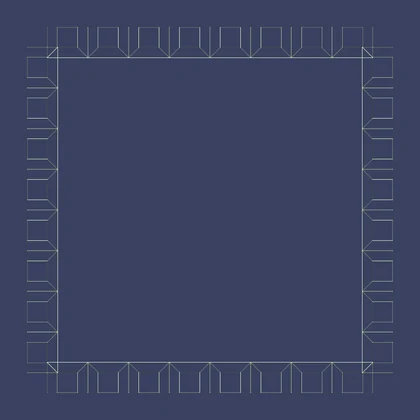
取牡丹花头的团花式角饰，四角对称，压住画面的边。
传统纹样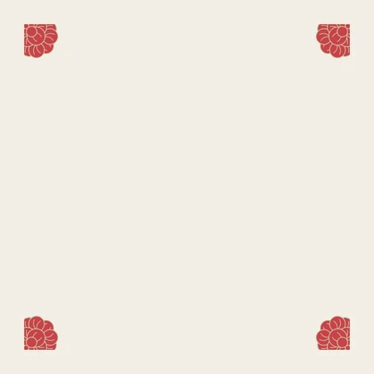
盘长结与莲花叠在内芯，做整个八角花的收束点。
传统纹样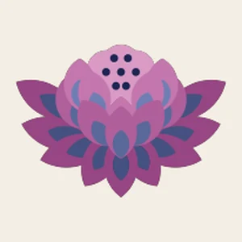
蝴蝶歌是声音，不是纹样。这里的层多从二声部的同起同收、富川瑶锦的半抽象蝴蝶借形。
取样自一幅四向几何团花：回纹勾角、四组双叶、四个红三角。它不是蝴蝶，是边框的骨架。
传统纹样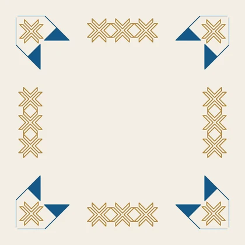
瑶族大八角花的几何变体。红花落在四角，给边框打节奏。
传统纹样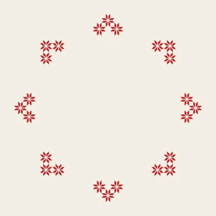
二声部同起同收：长句画成大波，短句画成小波，两条线在句尾合回同度。
声音与结构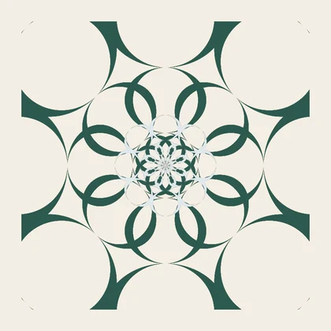
瑶族蝴蝶纹的半抽象写法，四翅用直线折面，翅内收着声部线。
传统纹样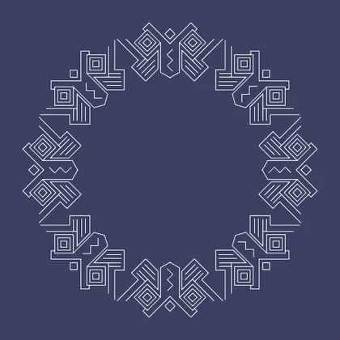
蝶翅与花头一隔一地排开，把中心的声部线围住。
传统纹样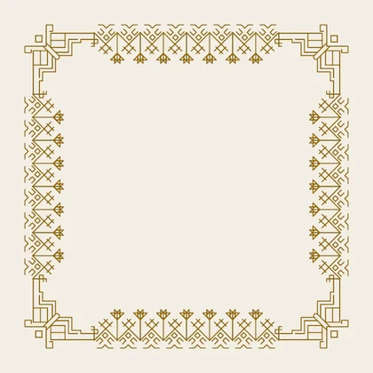
长鼓是器物。鼓身、鼓面、鼓点各有各的形，画面把三者叠在一个 X 上。
普通装饰图，不作解释。
原创装饰普通装饰图，不作解释。
原创装饰三重方框一层层收进，框距按鼓点分组，像拍打时一次比一次紧。
声音与结构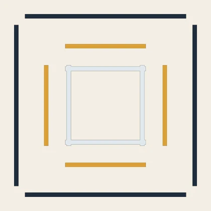
山形锯齿与菱形回钩一正一反地连续，借瑶锦花边的横向节奏。
传统纹样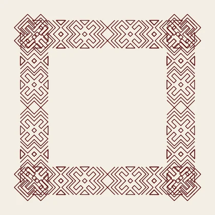
八角花与八瓣花叠在鼓面中心，鼓身交叉后形成旋转感。
传统纹样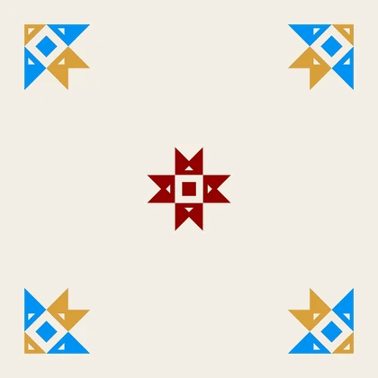
两只细腰鼓交叉成 X，保留鼓皮、腰线和彩绘的分段。
建筑与器物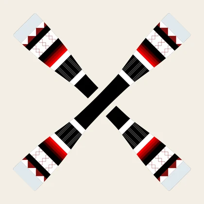
风雨桥是建筑。窗棂、瓦檐、翘角被拆成边饰，桥亭只留在中心。
桥廊木窗的格心，方框套方框，像从窗里看出去。
建筑与器物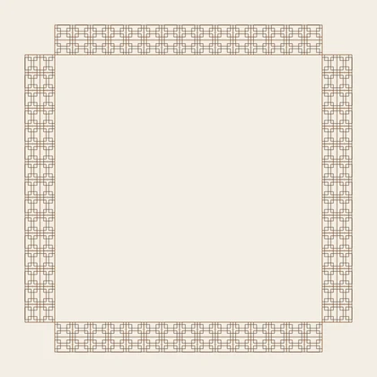
窗棂的十字格与井字格密排，做出桥廊的进深。
建筑与器物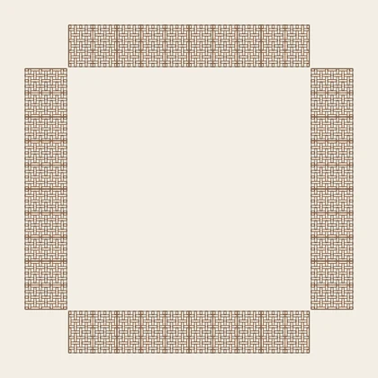
檐口瓦片的正负形，一排压一排，收住最外圈。
建筑与器物四角翘起的屋檐，正负形各取一半，拼成四片飞檐。
建筑与器物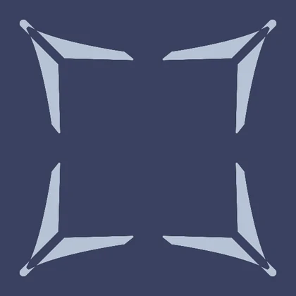
从房檐起翘和瓦当取形，做角部的填充纹。
建筑与器物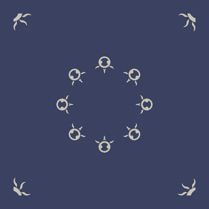
盘王大歌是歌书。页框、七任曲的环、盘王印的方心，组成一套可读的版式。
盘王印的图证主要在连南、乳源；这里只作形制参照，不写成富川本地实物。
盘王印外圈的粗细线，一粗一细交替，像朱文与白文的印边。
传统纹样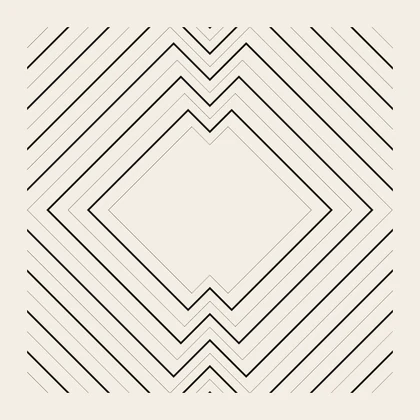
盘王印章型的角块，四角压住，给页框一个落印的位置。
传统纹样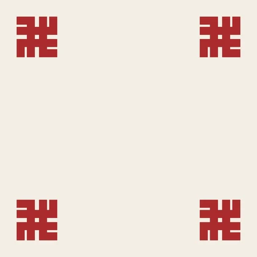
盘王经典纹样的横向带，三角与联珠交替，围住七任曲的环。
传统纹样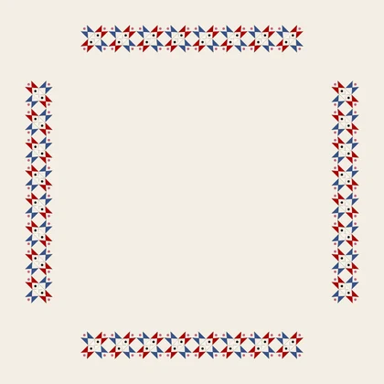
大八角花形，八出放射，是盘王印里最常见的花心。
传统纹样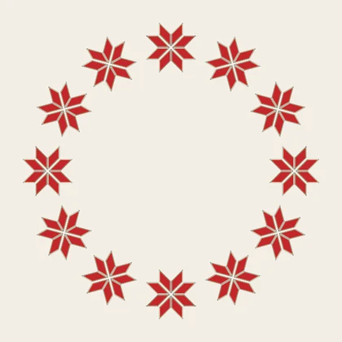
方心外方内八角，中心一点收住。形制参照连南、乳源的盘王印，不作本地实物。
传统纹样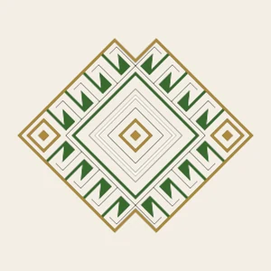
织锦是经纬。万字、菱格、锯齿、挑花都按经线显花的逻辑排。
据织锦边饰重画的折线带，锯齿与小花交替。
传统纹样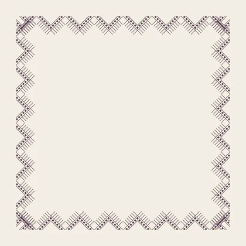
菱形花按八出排开，像经线显花后的放射。
传统纹样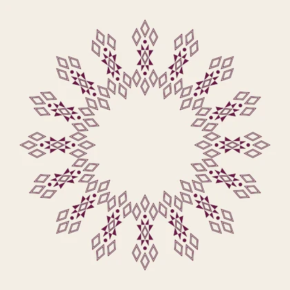
白框挑花里的卍字与十字变体，是织锦的中心花。中心直接用织好的挑花，不再另起一版。
传统纹样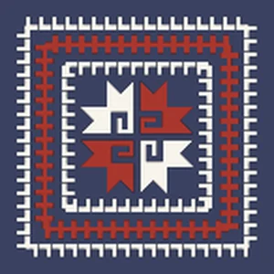
卍字与回纹的连续带，左右各一条，像织片的经向边。
传统纹样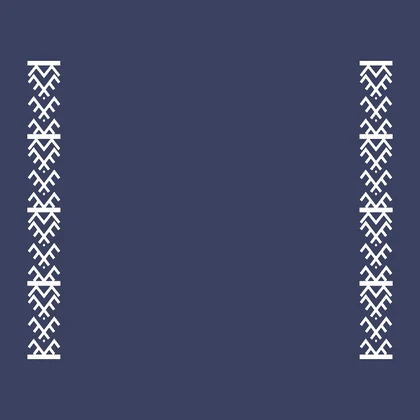
万字与菱格一上一下压边，是织锦里常见的收口。
传统纹样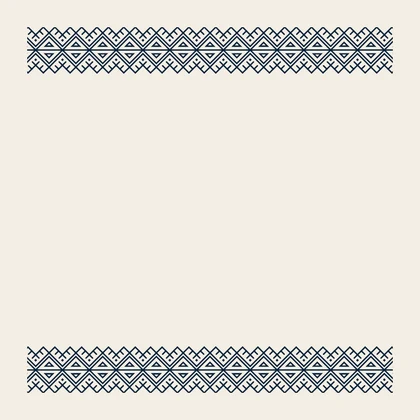
角落的小块嵌色方格，不单独成纹，只负责收角。
传统纹样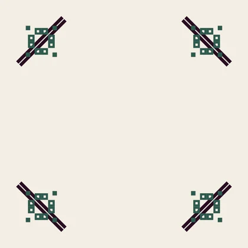